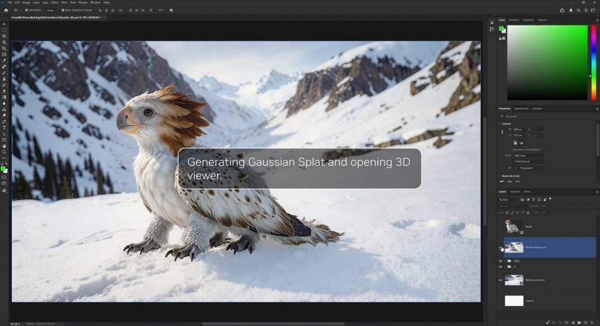

一句话判断
RTX Spark 的产品叙事把 PC 定位从“启动应用的终端”转为“可在本地执行 Agent、创作和游戏工作负载的个人 AI 计算平台”。它的可信度来自三层证据：芯片规格、软件栈与 Windows 安全协作、OEM 生态落地。
为什么现在值得关注
网页证据显示 NVIDIA 同时在消费级 RTX Spark 和桌面 DGX Spark 上讲同一条主线：本地 Agent 需要更大的统一内存、更强 AI 算力和可控的安全边界。
1 PFLOP
FP4 AI 性能
RTX Spark 与 DGX Spark 材料都强调 Blackwell 架构提供 petaFLOP 级本地 AI 计算。
128 GB
统一内存
产品页把统一内存作为本地大模型、长上下文和创作工作流的关键约束突破。
120B
本地模型规模
NVIDIA Newsroom 材料称 RTX Spark 可运行 120B 参数 LLM，并支持最高 100 万 tokens 上下文。

产品承诺的三段式结构
- 硬件层：Blackwell RTX GPU、Grace CPU、FP4 Tensor Cores、统一内存和高能效封装。
- 软件层：CUDA、RTX、TensorRT、OptiX、DLSS、NVIDIA AI 软件栈和 Windows 原生 Agent 基础设施。
- 生态层：Adobe、Blackmagic、Blender、ComfyUI、llama.cpp、Xbox 等创作、AI 和游戏生态共同背书。
RTX Spark 与 DGX Spark 的边界
| 维度 | RTX Spark | DGX Spark | 读者应如何理解 |
|---|---|---|---|
| 目标设备 | 轻薄 RTX 笔记本和小型桌面 PC | 桌面级个人 AI 超级计算机 | 前者面向主力 PC，后者更像本地 AI 工作站。 |
| 核心叙事 | 个人 Agent、创作和游戏一体化 | 构建并运行本地自治 Agent | 两者共享本地 Agent 方向，但场景密度不同。 |
| 关键约束 | 便携、全日续航、Windows 体验和 OEM 供给 | 大模型、playbook、DGX OS、开发栈 | 采购决策要按移动性、预算和模型规模拆开。 |
对三类人最直接的含义
- 创作者：12K 4:2:2 视频、AI 加速 Photoshop/Premiere、ComfyUI 等工作流更适合本地试错。
- AI 开发者：本地运行模型、Agent 和长上下文任务，减少对云端 token 资源的依赖。
- 玩家与图形用户：RTX、DLSS、Reflex 和光追仍是平台吸引力的一部分，不是与 Agent 叙事分离的副线。
证据边界
本报告只依据 forward-test 中已捕获的 NVIDIA 产品页、DGX Spark 页面和 NVIDIA Newsroom 文本。页面中的上市时间、OEM 机型和性能承诺属于厂商发布口径；没有独立跑分、价格、续航实测或第三方安全审计，因此不能把它当成购买建议或性能结论。
下一步判断框架
| 要问的问题 | 为什么重要 | 当前证据状态 |
|---|---|---|
| 本地 Agent 是否真的需要 128GB 统一内存？ | 决定它是刚需工作站还是高端概念卖点。 | NVIDIA 给出模型规模和上下文口径，但缺少第三方 workload 测试。 |
| Windows 安全 primitives 与 OpenShell 如何落地？ | Agent 运行在主力设备上，权限和隐私边界比算力更关键。 | 新闻稿说明方向，缺少应用层实测。 |
| OEM 供给、价格和散热是否支撑长期使用？ | 决定从发布叙事进入真实采购的可行性。 | 已有 ASUS、Dell、HP、Lenovo、Surface、MSI 等名单，细节仍待发布。 |